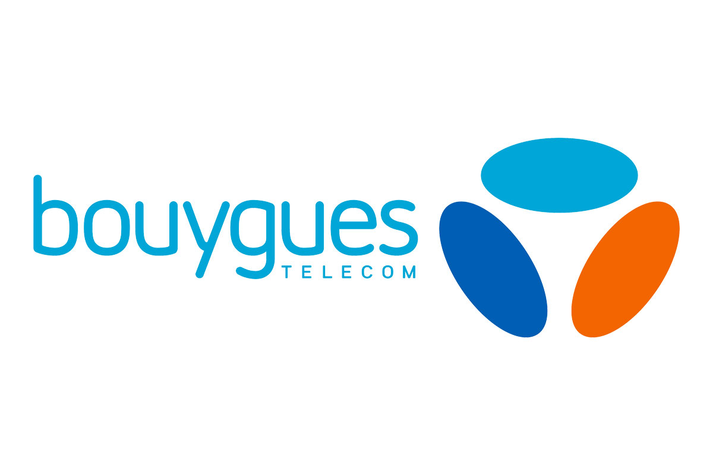
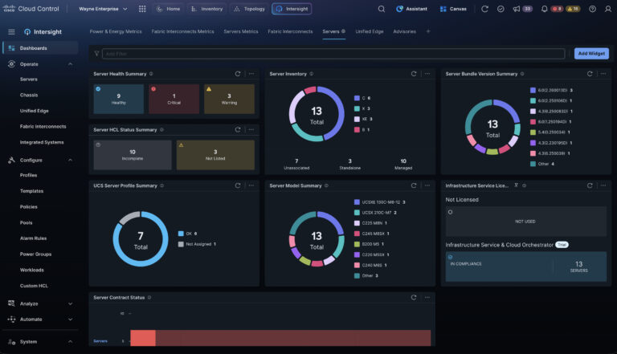

Pourquoi surveiller l'Intelligence Artificielle en infrastructure et cybersécurité ?
Dans le cadre de mon parcours BTS SIO option SISR, j'ai choisi de suivre l'impact de l'Intelligence Artificielle sur les systèmes, les réseaux et la cybersécurité. Aujourd'hui, l'IA est une arme à double tranchant : elle permet d'automatiser l'administration des infrastructures (AIOps / AgenticOps) et de filtrer les menaces en temps réel, mais elle est également exploitée par les attaquants pour découvrir des failles critiques (0-day) et industrialiser les cyberattaques.
Outils de veille utilisés : Agrégateurs de flux RSS (Feedly), alertes du CERT-FR, médias spécialisés (ZDNet, French Breaches) et conférences constructeurs (Cisco Live). Cliquez sur un mois ci-dessous pour dérouler l'analyse complète.
Septembre 2026
Télécoms & Sécurité • IA Temps Réel
Bouygues Telecom déploie une option Anti-Spam propulsée par l'IA au cœur de son réseau
▼
Bouygues Telecom déploie une option Anti-Spam propulsée par l'IA au cœur de son réseau
Pour contrer l'industrialisation des fraudes téléphoniques et des campagnes d'appels automatisés (appels silencieux servant à vérifier si une ligne est active avant une attaque ciblée), Bouygues Telecom lance en partenariat avec Hiya un filtre Anti-Spam directement intégré à son cœur de réseau mobile 4G/5G.
- Fonctionnement sans application : L'IA analyse en temps réel les métadonnées des appels directement au niveau de l'infrastructure opérateur, protégeant les flottes professionnelles sans installation sur les terminaux.
- Hygiène numérique : Les experts rappellent l'importance de ne pas rappeler les numéros inconnus silencieux et de laisser la messagerie filtrer les appels suspects.
- Déploiement : Proposée à 1 €/mois pour les entreprises (B2B) dès octobre 2026, cette solution démontre l'intégration native de l'IA défensive dans les infrastructures télécoms.

Octobre 2026
Réseaux & Cloud • AgenticOps
Cisco dévoile « Cloud Control » : le passage de l'AIOps vers l'AgenticOps
▼
Cisco dévoile « Cloud Control » : le passage de l'AIOps vers l'AgenticOps
Lors de Cisco Live 2026, Cisco a présenté Cloud Control, une console unifiée pilotant le réseau, la cybersécurité, l'observabilité et les environnements multicloud (AWS, Azure, Google Cloud). L'innovation majeure réside dans l'AgenticOps : des agents IA capables non seulement de détecter un incident, mais aussi d'en analyser la cause racine, d'exécuter des actions correctives et de documenter l'opération sous supervision humaine.
- Cloud Control Studio : Environnement permettant aux administrateurs d'interagir en langage naturel et de créer leurs propres agents IA d'automatisation.
- Live Protect : Protection dynamique permettant aux commutateurs et équipements Cisco de bloquer l'exploitation d'une nouvelle faille sans redémarrage ni interruption de service.
- Quantum Ready : Intégration d'un démarrage sécurisé (Secure Boot) et d'outils d'audit (Cisco IQ) pour préparer la migration vers la cryptographie post-quantique (PQC) face aux attaques « harvest now, decrypt later ».

Novembre 2026
Cybersécurité • Vulnérabilités & IA
Failles critiques dans PHP et automatisation de l'exploitation par IA
▼
Failles critiques dans PHP et automatisation de l'exploitation par IA
De nouvelles vulnérabilités critiques ont été découvertes dans l'écosystème PHP, accentuant la menace d'attaques automatisées. Les groupes cybercriminels exploitent désormais des agents IA autonomes capables de scanner le web, d'identifier les versions non patchées et de générer des scripts d'exploitation sur-mesure en quelques minutes.
- Vecteur d'attaque industrialisé : L'utilisation d'outils offensifs dopés à l'IA permet aux attaquants de contourner plus rapidement les défenses applicatives traditionnelles (WAF).
- Réaction des équipes SecOps : Nécessité absolue de mettre en place une veille active des correctifs (patch management) et de durcir les configurations serveurs.